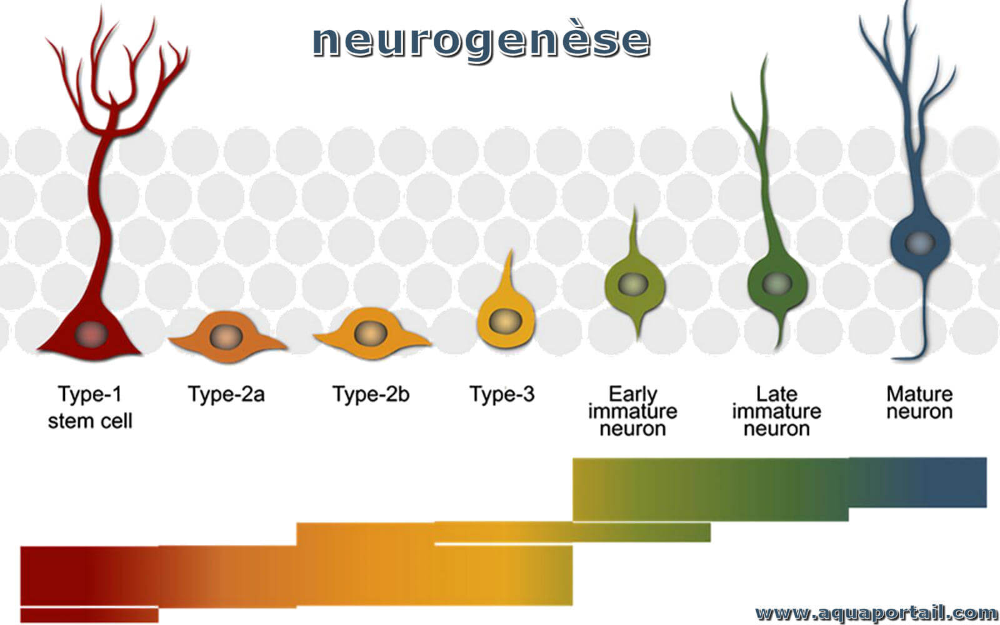

Analyse de la Qualité Nutritionnelle
Laurian Jamin
Babika Meghene
Florian Capilla
Cyprien Michels
Skills Acquired
| Skill | Description | Concrete Example |
|---|---|---|
| Data Analysis | ||
| Applied Statistics | ||
| Literature Research | ||
| Team Collaboration | ||
| Scientific Communication |
Introduction
What is neurogenesis?

NutriScore and Siga: Comparison of rating systems

NutriScore
Siga
Scientific properties of foods
White meat vs red meat
Vegetables vs green vegetables
Comparison with an external database (United States)
Major differences
Conclusion